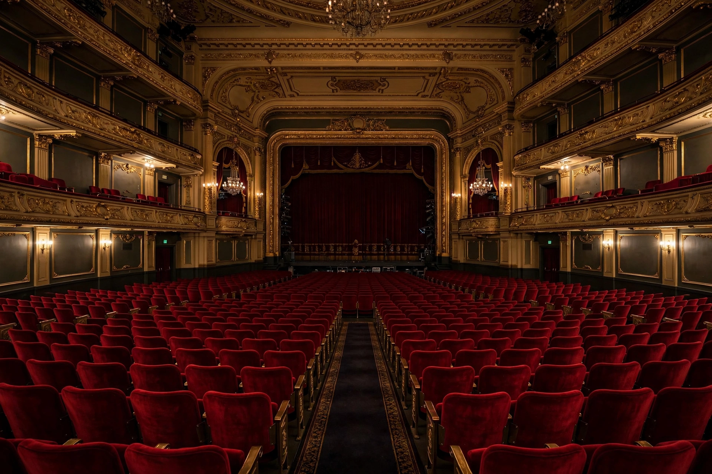

Books
The return of the big novel: why long books are winning readers back
A new generation of doorstop fiction is finding an audience raised on streaming box sets — and publishers are taking note.

A new generation of doorstop fiction is finding an audience raised on streaming box sets — and publishers are taking note.
With a cast of five and a bare stage, this touring production makes an old play feel startlingly current. ★★★★☆
Short menus, natural wine and no tablecloths: the city's most exciting cooking is happening in its smallest rooms.
The breakout title of the autumn festival season is a slow-burn portrait of three siblings dividing an inheritance.
Forget the grand tour. The most rewarding trips now run on branch lines, through mill towns and market squares.